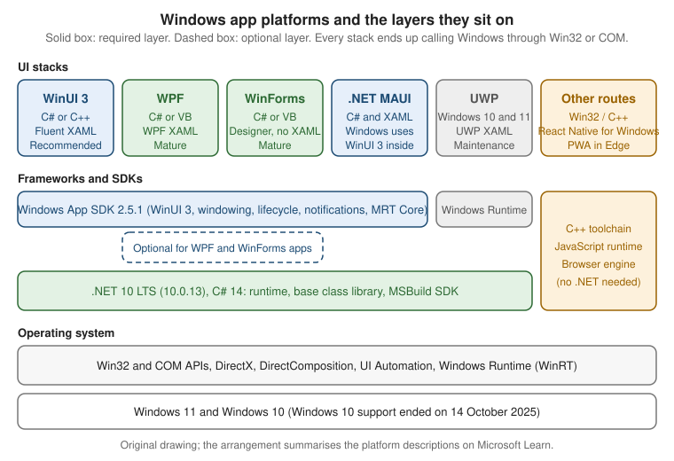

Windows App Platforms: WPF, WinUI 3, WinForms, MAUI & More
|
This content was generated with the assistance of AI and should be verified against the official documentation before being relied on in production. |
Windows has more ways to build a desktop application than any other platform, and the choice is made on day one: it decides the markup language, the packaging options, how modern the controls look and whether Native AOT is an option. This page is the entry point of the Windows Apps section. It compares the technologies that Microsoft documents, says which one the official guidance recommends for which situation, and shows the minimal project and the first view of each stack, so that the later pages can assume the choice has been made.
The page was written against these versions, current in October 2026:
-
.NET 10 LTS, latest patch 10.0.13, supported until 14 November 2028, with C# 14. .NET 8 and .NET 9 both end support on 10 November 2026.
-
.NET 11, at release candidate 2 (go-live licence). General availability is expected at .NET Conf, 10 to 13 November 2026. The WPF notes for .NET 11 list bug fixes only, so this page does not need a .NET 11 variant.
-
Visual Studio 2026, latest 18.11.1, with the ".NET desktop development" and "WinUI application development" workloads.
-
Windows App SDK 2.5.1 (stable channel). Version 2.0 was the first release to follow semantic versioning, and the NuGet package version now equals the SDK version.
-
CommunityToolkit.Mvvm 8.4.2 for the view models used in the examples.
-
Windows 11 and Windows 10. Windows 10 reached the end of support on 14 October 2025, so new work should target Windows 11 first, and the exact operating-system floor of each stack should be read from its system-requirements page.
The language itself is documented on Getting Started with C# in the C# reference. This page deals with the platforms around it. Later pages of the section go deeper into each of them: Development Environment & Tooling, Project Structure & Build, XAML Dialects: WPF, WinUI & MAUI, WinUI 3 & the Windows App SDK, Windows Forms on .NET and .NET MAUI, UWP & Other Options.
What Microsoft Recommends
The official starting point is the Windows developer FAQ and the "get started" hub on Microsoft Learn. Read together, they give this guidance, which this section follows:
-
New native Windows apps: use WinUI 3 with the Windows App SDK. It is the modern native UI framework, it ships independently of the operating system, and the Windows App SDK is where new Windows platform APIs are exposed to desktop apps.
-
WPF: a mature framework that Microsoft keeps maintaining as part of .NET. It is a sound choice for existing apps and for line-of-business tools that need its large control and tooling ecosystem. Each .NET release brings fixes and some features (the Fluent theme arrived in .NET 9).
-
Windows Forms: still receiving investment. The .NET 10 release stabilised dark mode and added asynchronous dialog and invoke APIs. It remains the fastest route to a data-entry form for existing skills and code.
-
UWP: in maintenance mode. It still works and is supported, but new features go to WinUI 3 and the Windows App SDK, and Microsoft documents migration paths away from it.
-
.NET MAUI: the cross-platform option. On Windows, MAUI runs on WinUI 3.
-
Other options: Win32 with C++, React Native for Windows and progressive web apps (PWAs) are documented as additional routes for teams with matching skills.
Source: Windows developer FAQ
Two details of that guidance matter in practice. First, "recommended for new apps" is not "replace your existing apps": nothing in the official documentation says that WPF or Windows Forms apps must be rewritten. Second, the recommendation is for native apps. A team that already needs one codebase for Android, iOS and Windows is in different territory, covered further below.
The overview of the platform choices lives on the "get started" hub:
Source: Start developing Windows apps
The Platform Map
The figure shows where each technology sits. Three layers matter: the UI stack the developer writes against, the frameworks and SDKs underneath (the Windows App SDK and .NET), and the operating-system APIs every stack eventually calls.

Three relationships in the figure explain most of the decisions that follow:
-
WPF and Windows Forms run on .NET, not on the Windows App SDK. The Windows App SDK is optional for them: a WPF or WinForms app can call its APIs (notifications, windowing helpers, app lifecycle) and can adopt MSIX packaging without changing UI framework. That is the supported way to modernise an app without rewriting it.
-
WinUI 3 is delivered by the Windows App SDK. Its controls, its XAML dialect (
Microsoft.UI.Xaml) and its windowing model come from the SDK package, not from the operating system. Updating the SDK updates the controls. -
.NET MAUI sits above WinUI 3 on Windows. A MAUI page is turned into WinUI controls by handlers, so MAUI on Windows is not an alternative renderer. It is a cross-platform abstraction over the same stack.
Win32 is at the bottom of every column. Even a WinUI 3 app asks Win32 for a window handle, and a WPF app is hosted
in an HWND. This is why interop (P/Invoke, CsWin32, HwndHost) is a normal tool and not a hack, and why a later
page of the section, Interop: Win32, WinForms & Web Content, covers it.
Comparison of the Stacks
The tables compare the stacks along the dimensions that decide a project: how they draw, which XAML they use, how modern they look, how they are packaged, whether Native AOT works, whether they leave Windows, and whether they are still evolving.
Technology and appearance
| Aspect | WPF | Windows Forms | WinUI 3 | .NET MAUI on Windows | UWP |
|---|---|---|---|---|---|
Rendering |
Retained-mode, vector based, drawn by WPF itself on top of DirectX |
Wrappers around Win32 and common controls, drawn with GDI and GDI+, one window handle per control |
Composition-based, GPU accelerated, part of the Windows App SDK |
Handlers create WinUI 3 controls, so the rendering is that of WinUI 3 |
Windows Runtime XAML with the system compositor |
Markup |
WPF XAML ( |
None. The designer writes C# ( |
WinUI XAML ( |
MAUI XAML ( |
UWP XAML ( |
Binding |
|
|
|
|
|
Fluent look |
Opt-in Fluent theme since .NET 9, selected with |
Classic controls. Dark mode through |
Native Fluent controls, Mica and Acrylic backdrops |
Windows controls are WinUI controls, so Fluent by default |
Fluent through the WinUI 2 library, older than WinUI 3 |
Visual designer |
XAML designer and Live Visual Tree in Visual Studio |
Out-of-process Windows Forms designer |
XAML designer, Hot Reload and Live Visual Tree |
XAML Hot Reload |
XAML designer |
The practical reading: WPF gives the most expressive control over drawing, templating and animation. Windows Forms gives the shortest path from zero to a working data-entry screen. WinUI 3 gives the most current look and the newest platform integration. A WPF app can look modern with the Fluent theme, but the Fluent theme in .NET 10 is still partly experimental, and the official documentation has no deep dive for it, only the what’s new pages.
Source: What’s new in WPF for .NET 10
Packaging, publishing and reach
| Aspect | WPF | Windows Forms | WinUI 3 | .NET MAUI on Windows | UWP |
|---|---|---|---|---|---|
Packaging |
Unpackaged by default. MSIX through a packaging project, ClickOnce, or an installer |
Same as WPF |
Unpackaged, or packaged as MSIX (single-project MSIX) |
MSIX by default, unpackaged also supported |
Always packaged |
Trimming and Native AOT |
Not supported (build error NETSDK1168) |
Not supported |
|
Not documented for the Windows target |
Compiled by the legacy .NET Native toolchain in release builds |
Single-file publish |
Yes (self-contained or framework-dependent) |
Yes |
Only unpackaged and self-contained |
See the MAUI deployment pages |
No |
Runs outside Windows |
No |
No |
No |
Yes: Android, iOS, macOS (Mac Catalyst) and Windows |
No |
Language |
C#, F#, Visual Basic |
C#, Visual Basic |
C# and C++ |
C# |
C#, Visual Basic and C++ |
Support status |
Maintained with .NET |
Maintained with .NET, active investment |
Active, stable Windows App SDK 2.5.1 |
Active, follows the .NET release schedule |
Maintenance mode |
The row about publishing deserves attention. Trimming and Native AOT are the usual answer to "make the app start faster and download smaller", and they are simply not available for WPF and Windows Forms. A team that picks WPF for its ecosystem accepts a larger self-contained output. The optimisation tools that remain (ReadyToRun, single file, framework-dependent deployment) are covered by the .NET Publishing Options page.
Source: Native AOT deployment
Source: Trimming incompatibilities
The same concept in three XAML dialects
WPF, WinUI 3 and MAUI all use XAML, but they are three different dialects over three different object models. The syntax is shared; the names are not.
| Concept | WPF | WinUI 3 | .NET MAUI |
|---|---|---|---|
Default namespace |
|
The same URI text, mapped to |
|
Compiled binding |
Not available |
|
|
Window type |
|
|
|
List control |
|
|
|
Triggers |
|
Not available, use |
|
Pages later in the section go through the differences property by property. For the platform decision, the point is that markup does not move between stacks unchanged: moving from WPF to WinUI 3 is a port of the views, not a recompile.
Source: XAML overview for Windows apps
WPF
WPF (Windows Presentation Foundation) is the oldest of the XAML stacks and the most feature-rich: a layout system, rich data binding, templates and styles, animation, 2-D and 3-D graphics, documents and printing. Since .NET Core 3.0 it has been open source and runs on modern .NET, so a WPF app on .NET 10 is not a "legacy" app in any technical sense. It runs only on Windows and only on x86, x64 and Arm64 builds of it.
Choose WPF when:
-
the app already exists, or the team already knows XAML and WPF data binding;
-
the UI is dense and custom (data grids, docking, charts, drawing surfaces), where the third-party control market is largest;
-
the app must run on the widest range of supported Windows versions;
-
a heavy investment in styles and templates should keep working.
WPF is a poor fit when the product must use the newest Windows-only controls, needs Native AOT, or must also ship to macOS, Linux or mobile.
Windows Forms
Windows Forms is the classic event-driven designer-first framework. Its controls wrap the native Win32 controls, so
they look and behave like the operating system’s own, and a form is a C# class whose InitializeComponent method
the designer generates. The designer runs out of process on .NET so that third-party control libraries can target
.NET.
The .NET 10 release added stable dark mode support (Application.SetColorMode), the asynchronous
ShowAsync, ShowDialogAsync and Control.InvokeAsync methods, clipboard changes and ScreenCaptureMode.
These are the signals behind the statement that Windows Forms is "still getting investment": the framework gets
modern conveniences, but its model (a retained tree of native windows, GDI based painting) does not change.
Choose Windows Forms when:
-
the app is a data-entry or utility application and productivity matters more than visual polish;
-
an existing Windows Forms app should move from .NET Framework to .NET 10 with the least change;
-
the team has Windows Forms or Visual Basic skills and no XAML skills.
Source: Windows Forms overview
WinUI 3 and the Windows App SDK
WinUI 3 is the native UI layer of the Windows App SDK, and the SDK is a set of components that ship as NuGet
packages: the UI framework, windowing (AppWindow), app lifecycle (AppInstance and rich activation), app
notifications, MRT Core resource management and the Windows AI APIs for Copilot+ PCs. Because the SDK ships
independently from Windows, new features reach older supported Windows versions.
Release channels matter for planning. Stable is what production apps use (2.5.1 at the time of writing). Preview and Experimental channels exist for early access. Version 1.8 left maintenance on 24 September 2026, so apps still on 1.x should plan the move to 2.x.
Choose WinUI 3 when:
-
the app is new and Windows-only, and a current Fluent look, Mica and the latest Windows integration matter;
-
Native AOT is desirable (it is supported for WinUI);
-
the team wants compiled bindings (
x:Bind) for typed, fast data binding.
Be aware of its constraints: it has a smaller third-party control market than WPF; single-file publishing works only for unpackaged, self-contained apps; and XAML Islands, which host WinUI controls inside WPF and Windows Forms, has no official wrapper controls and its documentation page redirects to the legacy UWP material. The WinUI 3 & the Windows App SDK page of this section covers the architecture in depth.
Source: WinUI 3
Source: Windows App SDK release channels
.NET MAUI on Windows
app is a WinUI 3 app, with the MAUI handlers creating WinUI controls. Choose it when sharing code with mobile is the main requirement and a Windows-only look is secondary; do not choose it only to "use XAML on Windows", because WinUI 3 and WPF give direct access to the platform with fewer layers. A later page of the section, .NET MAUI, UWP & Other Options, covers it in more detail.
Source: What is .NET MAUI?
UWP: Status and Migration
The Universal Windows Platform introduced the Windows Runtime app model for Windows 10: sandboxed, always packaged,
XAML in the Windows.UI.Xaml namespace, and one app that could run on PC, Xbox, HoloLens and Surface Hub. UWP is
now in maintenance. What this means:
-
existing UWP apps continue to build, run and be published;
-
Microsoft fixes defects and security problems but does not add features to the UWP XAML framework;
-
new work is directed to WinUI 3 and the Windows App SDK, which reuse the same XAML ideas (
x:Bind,VisualStateManager,NavigationView) and make migration a port rather than a redesign; -
the Windows App SDK documentation includes a migration guide, and the decision guide on the migrate to Windows App SDK pages helps to decide between moving to WinUI 3 and staying where you are.
The device-family promise of UWP (Xbox, HoloLens) is the main reason an app might legitimately stay on it. For desktop-only apps there is no technical reason to start a new UWP project.
Source: Migration decision guide
Other Routes
The Windows developer FAQ also covers technologies outside the .NET UI frameworks. They are summarised here because a team choosing a platform should know they exist, but this section does not teach them.
| Route | When it fits |
|---|---|
What you give up |
Win32 with C++ (and C++/WinRT for the Windows Runtime) |
Maximum control over memory and start-up, game engines, system utilities and legacy code bases that are already native |
Productivity: no XAML designer in the Win32 case, manual memory and lifetime management, a long learning curve |
React Native for Windows |
A team with React and TypeScript skills that wants to share logic with a mobile app and render native Windows controls |
.NET libraries, the XAML tooling and the C# ecosystem used by the rest of this section |
Progressive web app (PWA) |
A web app that should be installable and feel app-like on Windows, delivered through the browser and optionally the Microsoft Store |
Deep operating-system integration, and offline or native performance beyond what the web platform provides |
All three can be combined with the .NET stacks. A WPF or WinUI app can host web content with WebView2, call native code through P/Invoke or C++/WinRT components, and a React Native for Windows app can bring its own native modules written in C#.
Source: Windows developer FAQ
Third-party options
Two community-driven frameworks deserve a mention because teams ask about them. They are third-party projects, not Microsoft products, and the official documentation does not cover them, so no tutorial is given here.
-
Avalonia is an open-source XAML framework that draws its own controls and runs on Windows, macOS, Linux, mobile and the browser. Its XAML is modelled on WPF, which makes it the usual choice for taking a WPF code base to Linux or macOS.
-
Uno Platform is an open-source framework that implements the WinUI API surface on other platforms, so WinUI code can run on iOS, Android, macOS, Linux and WebAssembly.
Both depend on a vendor or community that is not Microsoft, so evaluate their licence, support and release cadence before committing. Test tools such as FlaUI (UI automation) and installers such as Velopack are likewise third-party and are mentioned on the pages where they matter.
Choosing a Stack
A decision flow
The flow starts from the situation rather than from the technology. It encodes the guidance above, so it is a starting point and not a verdict.
New apps
For a new Windows-only desktop app, start from WinUI 3 unless a concrete requirement points elsewhere. The requirements that justify another stack are specific and checkable:
| Requirement | Prefer | Reason |
|---|---|---|
A control suite or a design tool that exists only for WPF |
WPF |
The ecosystem is larger, and rewriting the controls costs more than living with the older look |
A forms-over-data tool built by a small team in days |
Windows Forms |
The designer and |
Android, iOS and Windows from one team and codebase |
.NET MAUI |
One project, one language, and the Windows target is WinUI 3 |
Native AOT, smallest start-up, newest Windows APIs |
WinUI 3 |
It is the only XAML stack with |
A web team that wants a desktop presence |
PWA or React Native for Windows |
Reuses existing skills and code |
Existing apps
For an existing app the cost of change dominates the decision, and the official guidance is conservative:
-
Move to modern .NET first. A WPF or Windows Forms app on .NET Framework 4.x should move to .NET 10 LTS. This is the step that brings support, performance and the new APIs, and it does not change the UI framework.
-
Add Windows App SDK features without changing the UI. Packaging with MSIX, app notifications, windowing helpers and the Windows AI APIs can be used from WPF and Windows Forms.
-
Port the UI only when a requirement demands it. Moving to WinUI 3 is justified by Native AOT, the Fluent look or Windows features that cannot be reached from the old stack. It is a port of views and bindings.
-
Keep UWP apps on UWP unless there is a feature to gain, because maintenance mode does not mean end of life.
Minimal Projects for Each Stack
The commands and project files below create the smallest app of each stack on .NET 10. They use the SDK-style
project format: one .csproj, no packages.config, and the target framework moniker (TFM) decides which Windows
APIs are visible.
Target framework monikers
| Stack | Target framework | Notes |
|---|---|---|
WPF |
|
|
Windows Forms |
|
|
WinUI 3 |
|
|
Windows Forms or WPF library |
|
|
Shared view model library |
|
No Windows dependency, so it can be unit-tested anywhere and reused by every UI project |
The -windows suffix is not a detail. A project targeting net10.0 cannot use WPF or Windows Forms types, and the
build fails with a missing assembly error if UseWPF or UseWindowsForms is absent.
Creating the projects
The first commands create the solution used by all the later examples: a shared library and one UI project per stack.
# Check the SDK: 10.0.x with x >= 13 at the time of writing
dotnet --version
# Solution and shared code (no Windows dependency)
dotnet new sln -n BookshelfDesktop
dotnet new classlib -n Bookshelf.Core -f net10.0
dotnet new wpf -n Bookshelf.Wpf -f net10.0
dotnet new winforms -n Bookshelf.WinForms -f net10.0
dotnet sln add Bookshelf.Core Bookshelf.Wpf Bookshelf.WinForms
dotnet add Bookshelf.Core package CommunityToolkit.Mvvm --version 8.4.2
dotnet add Bookshelf.Wpf reference Bookshelf.Core
dotnet add Bookshelf.WinForms reference Bookshelf.Core
# See which WinUI templates are installed or available
dotnet new list winui
dotnet new search winuiThe WPF and Windows Forms templates ship with the .NET SDK. WinUI project templates ship with the "WinUI
application development" Visual Studio workload, and the dotnet new search winui command shows whether template
packs for the command line are available on the machine. The recommended way to set the workstation up, including
the workloads and Developer Mode, is the "start here" page and the configuration file it points to; the
Development Environment & Tooling page of this section covers it.
Source: Start developing Windows apps
The WPF project file
<Project Sdk="Microsoft.NET.Sdk">
<PropertyGroup>
<OutputType>WinExe</OutputType>
<TargetFramework>net10.0-windows</TargetFramework>
<Nullable>enable</Nullable>
<ImplicitUsings>enable</ImplicitUsings>
<UseWPF>true</UseWPF>
<RootNamespace>Bookshelf.Wpf</RootNamespace>
</PropertyGroup>
<ItemGroup>
<ProjectReference Include="..\Bookshelf.Core\Bookshelf.Core.csproj" />
</ItemGroup>
</Project>Source: Upgrade WPF apps to .NET
The Windows Forms project file
<Project Sdk="Microsoft.NET.Sdk">
<PropertyGroup>
<OutputType>WinExe</OutputType>
<TargetFramework>net10.0-windows</TargetFramework>
<Nullable>enable</Nullable>
<ImplicitUsings>enable</ImplicitUsings>
<UseWindowsForms>true</UseWindowsForms>
<RootNamespace>Bookshelf.WinForms</RootNamespace>
</PropertyGroup>
<ItemGroup>
<ProjectReference Include="..\Bookshelf.Core\Bookshelf.Core.csproj" />
</ItemGroup>
</Project>Source: Windows Forms overview
The WinUI 3 project file
The WinUI project uses the Windows App SDK package, a TFM with a Windows SDK version and the platform list that the
Visual Studio templates generate. WindowsPackageType set to None produces an unpackaged app that runs from the
build output; removing that line and keeping EnableMsixTooling gives the single-project MSIX layout described on
the MSIX Packaging & Signing page.
<Project Sdk="Microsoft.NET.Sdk">
<PropertyGroup>
<OutputType>WinExe</OutputType>
<TargetFramework>net10.0-windows10.0.19041.0</TargetFramework>
<RootNamespace>Bookshelf.WinUI</RootNamespace>
<Platforms>x86;x64;ARM64</Platforms>
<RuntimeIdentifiers>win-x86;win-x64;win-arm64</RuntimeIdentifiers>
<UseWinUI>true</UseWinUI>
<EnableMsixTooling>true</EnableMsixTooling>
<WindowsPackageType>None</WindowsPackageType>
<Nullable>enable</Nullable>
<ImplicitUsings>enable</ImplicitUsings>
</PropertyGroup>
<ItemGroup>
<PackageReference Include="Microsoft.WindowsAppSDK" Version="2.5.1" />
</ItemGroup>
<ItemGroup>
<ProjectReference Include="..\Bookshelf.Core\Bookshelf.Core.csproj" />
</ItemGroup>
</Project>Source: Single-project MSIX packaging
What the three project files have in common
-
OutputTypeisWinExeso that no console window appears. -
NullableandImplicitUsingsfollow the .NET 10 defaults for new projects, and the section’s code samples assume them. -
The UI framework is switched on by one MSBuild property (
UseWPF,UseWindowsFormsorUseWinUI); the SDK then adds the references, the XAML compiler (for WPF and WinUI) and the generatedInitializeComponentplumbing. -
A
ProjectReferenceto the shared library keeps view models and services free of UI types.
One View Model, Three Views
The Bookshelf Desktop scenario is the running example of the section. The view model belongs to the shared library and is written once, so the three stacks can be compared on the same behaviour: load the books, filter by text, and delete the selected book after a confirmation.
The shared library
The shared library project is called Bookshelf.Core and holds every type below; the namespaces follow the canonical
Bookshelf Desktop layout of the section (Bookshelf.Core for Book and IBookRepository, Bookshelf.Desktop for
IDialogService, Bookshelf.Desktop.ViewModels for the view models). The repository is an in-memory stand-in for the
SQLite repository of the Local Data, Settings & Files page.
// Bookshelf.Core/Book.cs
namespace Bookshelf.Core;
public sealed record Book(int Id, string Title, string Author, int Year = 0, decimal Price = 0m, string? Isbn = null);
// Bookshelf.Core/IBookRepository.cs
namespace Bookshelf.Core;
public interface IBookRepository
{
Task<IReadOnlyList<Book>> GetAllAsync(CancellationToken cancellationToken);
Task<Book?> GetByIdAsync(int id, CancellationToken cancellationToken);
Task<Book> AddAsync(Book book, CancellationToken cancellationToken);
Task UpdateAsync(Book book, CancellationToken cancellationToken);
Task DeleteAsync(int id, CancellationToken cancellationToken);
}
// Bookshelf.Core/IDialogService.cs
namespace Bookshelf.Desktop;
using Bookshelf.Core;
public interface IDialogService
{
Task<bool> ConfirmAsync(string title, string message);
/// <summary>Shows the add/edit dialog. Returns null when the user cancels.</summary>
Task<Book?> EditBookAsync(Book? existing);
}
// Bookshelf.Core/InMemoryBookRepository.cs
namespace Bookshelf.Core;
public sealed class InMemoryBookRepository : IBookRepository
{
private readonly List<Book> _books =
[
new(1, "The Pragmatic Programmer", "Andrew Hunt", 1999),
new(2, "Refactoring", "Martin Fowler", 1999),
new(3, "Domain-Driven Design", "Eric Evans", 2003),
];
public Task<IReadOnlyList<Book>> GetAllAsync(CancellationToken cancellationToken)
=> Task.FromResult<IReadOnlyList<Book>>(_books.ToList());
public Task<Book?> GetByIdAsync(int id, CancellationToken cancellationToken)
=> Task.FromResult(_books.FirstOrDefault(book => book.Id == id));
public Task<Book> AddAsync(Book book, CancellationToken cancellationToken)
{
var added = book with { Id = _books.Count == 0 ? 1 : _books.Max(b => b.Id) + 1 };
_books.Add(added);
return Task.FromResult(added);
}
public Task UpdateAsync(Book book, CancellationToken cancellationToken)
{
var index = _books.FindIndex(b => b.Id == book.Id);
if (index >= 0)
{
_books[index] = book;
}
return Task.CompletedTask;
}
public Task DeleteAsync(int id, CancellationToken cancellationToken)
{
_books.RemoveAll(book => book.Id == id);
return Task.CompletedTask;
}
}Source: MVVM Toolkit
// Bookshelf.Core/BooksViewModel.cs
using System.Collections.ObjectModel;
using Bookshelf.Core;
using CommunityToolkit.Mvvm.ComponentModel;
using CommunityToolkit.Mvvm.Input;
namespace Bookshelf.Desktop.ViewModels;
public partial class BookViewModel(Book book) : ObservableObject
{
public Book Model { get; } = book;
public int Id => Model.Id;
public string Title => Model.Title;
public string Author => Model.Author;
public int Year => Model.Year;
[ObservableProperty]
public partial bool IsFavorite { get; set; }
}
public partial class BooksViewModel(IBookRepository repository, IDialogService dialogs) : ObservableObject
{
private List<BookViewModel> _all = [];
public ObservableCollection<BookViewModel> Books { get; } = [];
[ObservableProperty]
public partial string? SearchText { get; set; }
[ObservableProperty]
[NotifyCanExecuteChangedFor(nameof(DeleteSelectedCommand))]
public partial BookViewModel? SelectedBook { get; set; }
partial void OnSearchTextChanged(string? value) => ApplyFilter();
[RelayCommand(IncludeCancelCommand = true)]
private async Task LoadAsync(CancellationToken cancellationToken)
{
var books = await repository.GetAllAsync(cancellationToken);
_all = books.Select(book => new BookViewModel(book)).ToList();
ApplyFilter();
}
[RelayCommand(CanExecute = nameof(CanDeleteSelected))]
private async Task DeleteSelectedAsync()
{
if (SelectedBook is not { } book)
{
return;
}
if (!await dialogs.ConfirmAsync("Delete book", $"Delete \"{book.Title}\"?"))
{
return;
}
await repository.DeleteAsync(book.Id, CancellationToken.None);
_all.Remove(book);
ApplyFilter();
}
private bool CanDeleteSelected() => SelectedBook is not null;
private void ApplyFilter()
{
var text = SearchText?.Trim();
var matches = string.IsNullOrEmpty(text)
? _all
: _all.Where(b => b.Title.Contains(text, StringComparison.CurrentCultureIgnoreCase)
|| b.Author.Contains(text, StringComparison.CurrentCultureIgnoreCase)).ToList();
Books.Clear();
foreach (var book in matches)
{
Books.Add(book);
}
}
}Source: ObservableProperty attribute
The partial-property form of [ObservableProperty] needs C# 14 and the MVVM Toolkit 8.4.1 or later, both of which
the baseline of this section satisfies. The toolkit documentation pages still show the field form of the attribute,
and the page about the MVVMTK0042 analyzer still mentions LangVersion preview, so the release notes are the source
for the partial-property syntax. There is no Microsoft Learn MVVM article written specifically for WPF either; the
guidance is spread over the toolkit documentation, the .NET MAUI enterprise patterns book and the WinUI data binding
pages. The same view model works unchanged in all three stacks below.
WPF: DataContext and Binding
<!-- Bookshelf.Wpf/MainWindow.xaml -->
<Window x:Class="Bookshelf.Wpf.MainWindow"
xmlns="http://schemas.microsoft.com/winfx/2006/xaml/presentation"
xmlns:x="http://schemas.microsoft.com/winfx/2006/xaml"
Title="Bookshelf Desktop" Height="420" Width="680">
<Grid Margin="12" RowDefinitions="Auto, *, Auto">
<TextBox Grid.Row="0"
Margin="0,0,0,8"
AutomationProperties.Name="Search books"
Text="{Binding SearchText, UpdateSourceTrigger=PropertyChanged}" />
<DataGrid Grid.Row="1"
AutoGenerateColumns="False"
IsReadOnly="True"
ItemsSource="{Binding Books}"
SelectedItem="{Binding SelectedBook}">
<DataGrid.Columns>
<DataGridTextColumn Header="Title" Binding="{Binding Title}" Width="2*" />
<DataGridTextColumn Header="Author" Binding="{Binding Author}" Width="*" />
<DataGridTextColumn Header="Year" Binding="{Binding Year}" />
</DataGrid.Columns>
</DataGrid>
<Button Grid.Row="2"
Margin="0,8,0,0"
HorizontalAlignment="Right"
Content="Delete"
Command="{Binding DeleteSelectedCommand}" />
</Grid>
</Window>// Bookshelf.Wpf/MainWindow.xaml.cs
using Bookshelf.Desktop.ViewModels;
namespace Bookshelf.Wpf;
public partial class MainWindow : System.Windows.Window
{
public MainWindow(BooksViewModel viewModel)
{
InitializeComponent();
DataContext = viewModel;
Loaded += async (_, _) => await viewModel.LoadCommand.ExecuteAsync(null);
}
}
// Bookshelf.Wpf/WpfDialogService.cs
using Bookshelf.Core;
using Bookshelf.Desktop;
namespace Bookshelf.Wpf;
public sealed class WpfDialogService : IDialogService
{
public Task<bool> ConfirmAsync(string title, string message)
{
var result = System.Windows.MessageBox.Show(
message, title, System.Windows.MessageBoxButton.YesNo, System.Windows.MessageBoxImage.Question);
return Task.FromResult(result == System.Windows.MessageBoxResult.Yes);
}
// The add/edit dialog is shown on the Windows, Dialogs & Navigation page; this comparison has no edit screen.
public Task<Book?> EditBookAsync(Book? existing) => Task.FromResult<Book?>(null);
}
// Bookshelf.Wpf/App.xaml.cs (remove StartupUri from App.xaml)
using Bookshelf.Core;
using Bookshelf.Desktop.ViewModels;
namespace Bookshelf.Wpf;
public partial class App : System.Windows.Application
{
protected override void OnStartup(System.Windows.StartupEventArgs e)
{
base.OnStartup(e);
var viewModel = new BooksViewModel(new InMemoryBookRepository(), new WpfDialogService());
new MainWindow(viewModel).Show();
}
}The Grid attribute RowDefinitions="Auto, *, Auto" is the .NET 10 short form of a RowDefinitions collection; on
earlier versions the element form is required. The constructor creates the objects by hand to keep the example
short. The Dependency Injection & the Generic Host page replaces that with the Generic Host, and
the official documentation provides no WPF dialog service, so IDialogService is a user pattern, not an API.
Source: Data binding overview (WPF)
WinUI 3: x:Bind
<!-- Bookshelf.WinUI/MainWindow.xaml -->
<Window
x:Class="Bookshelf.WinUI.MainWindow"
xmlns="http://schemas.microsoft.com/winfx/2006/xaml/presentation"
xmlns:x="http://schemas.microsoft.com/winfx/2006/xaml"
xmlns:vm="using:Bookshelf.Desktop.ViewModels">
<Grid x:Name="RootGrid" Padding="12" RowSpacing="8">
<Grid.RowDefinitions>
<RowDefinition Height="Auto" />
<RowDefinition Height="*" />
<RowDefinition Height="Auto" />
</Grid.RowDefinitions>
<TextBox Grid.Row="0"
AutomationProperties.Name="Search books"
Text="{x:Bind ViewModel.SearchText, Mode=TwoWay, UpdateSourceTrigger=PropertyChanged}" />
<ListView Grid.Row="1"
ItemsSource="{x:Bind ViewModel.Books}"
SelectedItem="{x:Bind ViewModel.SelectedBook, Mode=TwoWay}">
<ListView.ItemTemplate>
<DataTemplate x:DataType="vm:BookViewModel">
<StackPanel Padding="0,4">
<TextBlock Text="{x:Bind Title}" Style="{StaticResource BodyStrongTextBlockStyle}" />
<TextBlock Text="{x:Bind Author}" />
</StackPanel>
</DataTemplate>
</ListView.ItemTemplate>
</ListView>
<Button Grid.Row="2"
HorizontalAlignment="Right"
Content="Delete"
Command="{x:Bind ViewModel.DeleteSelectedCommand}" />
</Grid>
</Window>// Bookshelf.WinUI/MainWindow.xaml.cs
using Bookshelf.Desktop.ViewModels;
using Microsoft.UI.Xaml;
namespace Bookshelf.WinUI;
public sealed partial class MainWindow : Window
{
public MainWindow(BooksViewModel viewModel)
{
ViewModel = viewModel;
InitializeComponent();
RootGrid.Loaded += async (_, _) => await ViewModel.LoadCommand.ExecuteAsync(null);
}
public BooksViewModel ViewModel { get; }
}The WinUI version differs in three visible ways. Bindings use x:Bind and are resolved against the window class
(so ViewModel is a property of the window, and no DataContext is involved). The DataTemplate declares its
data type with x:DataType. Window is not a FrameworkElement, so there is no Loaded event or
DataContext on it, and the example uses a named root element. The Grid has no short row-definition syntax in
WinUI. A dialog service for WinUI needs a ContentDialog and an XamlRoot taken from the window content, which is why
it is not shown here.
Source: x:Bind markup extension
Windows Forms: BindingSource
// Bookshelf.WinForms/MainForm.cs
using System.Collections.Specialized;
using Bookshelf.Desktop.ViewModels;
namespace Bookshelf.WinForms;
public sealed class MainForm : Form
{
private readonly BooksViewModel _viewModel;
private readonly BindingSource _books = new();
private readonly TextBox _search = new() { Dock = DockStyle.Top };
private readonly DataGridView _grid = new()
{
Dock = DockStyle.Fill,
ReadOnly = true,
AllowUserToAddRows = false,
SelectionMode = DataGridViewSelectionMode.FullRowSelect,
MultiSelect = false,
};
private readonly Button _delete = new() { Text = "Delete", Dock = DockStyle.Bottom };
public MainForm(BooksViewModel viewModel)
{
_viewModel = viewModel;
Text = "Bookshelf Desktop";
ClientSize = new Size(680, 420);
AccessibleName = "Bookshelf Desktop";
_search.AccessibleName = "Search books";
Controls.Add(_grid);
Controls.Add(_search);
Controls.Add(_delete);
// BookViewModel has more public properties than the grid should show, so declare the columns.
_grid.AutoGenerateColumns = false;
_grid.Columns.Add(new DataGridViewTextBoxColumn { DataPropertyName = nameof(BookViewModel.Title), HeaderText = "Title" });
_grid.Columns.Add(new DataGridViewTextBoxColumn { DataPropertyName = nameof(BookViewModel.Author), HeaderText = "Author" });
_grid.Columns.Add(new DataGridViewTextBoxColumn { DataPropertyName = nameof(BookViewModel.Year), HeaderText = "Year" });
_books.DataSource = viewModel.Books;
_grid.DataSource = _books;
_search.DataBindings.Add(nameof(TextBox.Text), viewModel, nameof(BooksViewModel.SearchText),
false, DataSourceUpdateMode.OnPropertyChanged);
_delete.Command = viewModel.DeleteSelectedCommand;
// ObservableCollection does not implement IBindingList, so refresh the BindingSource by hand
viewModel.Books.CollectionChanged += OnBooksChanged;
_grid.SelectionChanged += (_, _) => viewModel.SelectedBook = _books.Current as BookViewModel;
}
protected override async void OnShown(EventArgs e)
{
base.OnShown(e);
await _viewModel.LoadCommand.ExecuteAsync(null);
}
private void OnBooksChanged(object? sender, NotifyCollectionChangedEventArgs e)
=> _books.ResetBindings(false);
}
// Bookshelf.WinForms/Program.cs
using Bookshelf.Core;
using Bookshelf.Desktop.ViewModels;
using Bookshelf.WinForms;
internal static class Program
{
[STAThread]
private static void Main()
{
ApplicationConfiguration.Initialize();
Application.Run(new MainForm(new BooksViewModel(new InMemoryBookRepository(), new MessageBoxDialogService())));
}
}
// Bookshelf.WinForms/MessageBoxDialogService.cs
using Bookshelf.Core;
using Bookshelf.Desktop;
namespace Bookshelf.WinForms;
internal sealed class MessageBoxDialogService : IDialogService
{
public Task<bool> ConfirmAsync(string title, string message)
=> Task.FromResult(MessageBox.Show(message, title, MessageBoxButtons.YesNo, MessageBoxIcon.Question)
== DialogResult.Yes);
public Task<Book?> EditBookAsync(Book? existing) => Task.FromResult<Book?>(null);
}Windows Forms binds through BindingSource and Control.DataBindings. It has no XAML, so the form is written in
code here to keep the example complete; in a real project the designer produces the same assignments in
MainForm.Designer.cs. The Button.Command property, which lets a button invoke an ICommand and follow its
CanExecute state, was added in .NET 7 and is what makes the MVVM Toolkit commands usable without an event handler.
The ObservableCollection<T> type does not implement IBindingList, so the form refreshes the BindingSource itself
when the collection changes. It is one of the small gaps that make MVVM in Windows Forms feel less natural than in the
XAML stacks. The Windows Forms on .NET page of this section goes deeper.
Source: Windows Forms overview
From .NET Framework to .NET 8, 9 and 10
Most existing WPF and Windows Forms apps run on .NET Framework 4.x. The table lists what changes when they move to modern .NET, and which release brought which change. It is a summary: the Migrating from .NET Framework page of the section follows the migration step by step.
| Area | Change |
|---|---|
Release |
Runtime |
.NET Framework stays installed with Windows and receives only servicing. Modern .NET is side-by-side, versioned and shipped with the app or installed as the Desktop Runtime |
.NET Core 3.0 first ran WPF and Windows Forms |
Project format |
SDK-style projects with |
.NET Core 3.0 onwards |
Removed technologies |
AppDomains for isolation, .NET Remoting, Code Access Security and WCF server hosting are unavailable. |
Differences from .NET Framework |
Serialization |
|
.NET 9; clipboard guidance for .NET 10 |
WPF Fluent theme |
An opt-in Fluent theme, with accent colour support |
.NET 9 |
WPF in .NET 10 |
|
.NET 10 |
Windows Forms in .NET 10 |
Stable dark mode ( |
.NET 10 |
Trimming and Native AOT |
Not available, even on modern .NET. The build reports NETSDK1168 for WPF |
All versions |
Support |
.NET 8 and .NET 9 end on 10 November 2026; .NET 10 is supported until 14 November 2028 |
.NET 10 is the LTS baseline |
The .NET Upgrade Assistant, which older articles recommend, is deprecated. Microsoft now points to GitHub Copilot app modernization for assisted upgrades. The WPF documentation additionally has a migration section with a manual walkthrough and a "differences from .NET Framework" page.
Source: .NET Upgrade Assistant overview
Modernising Without a Rewrite
The Windows App SDK documentation describes a path between "keep as is" and "rewrite in WinUI 3": add Windows App SDK features to a WPF or Windows Forms app. The usual order is packaging first (an MSIX package gives the app identity, clean install and uninstall, and access to features that require identity), then notifications and lifecycle, then selected WinUI controls through XAML Islands where the lack of wrapper controls is acceptable. The Windows Platform Integration and MSIX Packaging & Signing pages follow it.
Source: Modernize your desktop app
Pitfalls
-
Choosing by novelty. "Recommended for new apps" is not a deprecation of WPF or Windows Forms. A rewrite to WinUI 3 costs the views, the styles, the third-party controls and the testing, and should be justified by a requirement.
-
Forgetting the
-windowsTFM.net10.0projects cannot use WPF or Windows Forms. WinUI needs the Windows SDK version in the TFM (net10.0-windows10.0.19041.0in the examples). -
Expecting Native AOT everywhere. AOT works for WinUI and not for WPF or Windows Forms. Plan start-up optimisation with ReadyToRun instead.
-
Expecting identical XAML. A WPF
Triggerhas no WinUI equivalent,x:Binddoes not exist in WPF, andWindowhas different base types. Plan a port as work, not a rename. -
Mixing up the SDK and the framework. The Windows App SDK is not .NET, and updating it does not change the .NET runtime. A WinUI project has two version numbers to keep consistent.
-
Staying on end-of-support runtimes. .NET 8 and .NET 9 end support on 10 November 2026, so any new project should start on .NET 10 and existing ones should plan the update.
-
Assuming a rewrite is the only way to get modern features. Packaging, notifications and windowing helpers reach WPF and Windows Forms through the Windows App SDK.
-
Trusting year-old tutorials. The Upgrade Assistant, the App Center crash reporting service and the old WinUI 3 preview templates have been replaced or retired.
Performance and Security Considerations
On performance, the stack decides the baseline. WPF start-up is dominated by JIT time and assembly loading, so
ReadyToRun and a lean App.xaml matter. WinUI 3 apps can use Native AOT for the smallest start-up. Windows Forms
is light, but heavy custom painting runs on the GDI path. In every stack the rule is the same: keep the UI thread
free, load data asynchronously and virtualise long lists. The Performance & Diagnostics page covers measurement.
On security, the platform affects the options available. MSIX packages run with a defined identity and declared capabilities and are signed, which gives the user a clear install and uninstall story; unpackaged apps have no container and need their own signing and update security. Code signing and SmartScreen reputation apply to all stacks. The Security & App Isolation page covers the details. Loading XAML at run time from untrusted sources is unsafe in WPF, because XAML can instantiate arbitrary types.
What the Official Documentation Does Not Provide
The Microsoft documentation is detailed, but it has gaps that affect this page’s topic, and this section does not fill them with invented material:
-
There is no single, authoritative feature matrix of WPF, Windows Forms, WinUI 3 and MAUI. The Windows developer FAQ gives recommendations in prose; the tables on this page are an editorial summary built from the individual framework pages.
-
Native AOT support for WinUI is documented in release notes, not in a conceptual page, and Native AOT for WPF and Windows Forms is simply stated as unsupported.
-
XAML Islands hosting WinUI 3 in WPF or Windows Forms has no wrapper controls, and its documentation link redirects to the legacy UWP page.
-
There is no official dialog service, navigation service or ViewModel locator for WPF or Windows Forms, and no Learn article about MVVM written for WPF. The
IDialogServicein the examples is a pattern, not an API. -
There is no conceptual page on the WPF Ribbon (API reference only), no deep dive on Fluent theming in WPF, and no current Microsoft recommendation for desktop UI test automation.
-
Third-party frameworks (Avalonia, Uno Platform) and tools (FlaUI, Velopack) are outside the official documentation. The section mentions them by name and does not teach them.
Where to Go Next
The Development Environment & Tooling page sets up Visual Studio 2026, Developer Mode and the command-line tools. Project Structure & Build explains the files created above. For the XAML-based stacks, XAML Language Fundamentals and XAML Dialects: WPF, WinUI & MAUI explain the markup. Publishing starts with .NET Publishing Options. Related topics are tracked outside this page: the Visual Basic section covers Windows Forms and WPF in VB, and the CLI apps section covers console applications, which are not UI stacks.